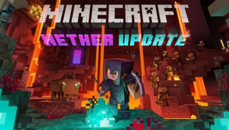
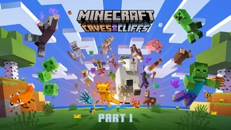
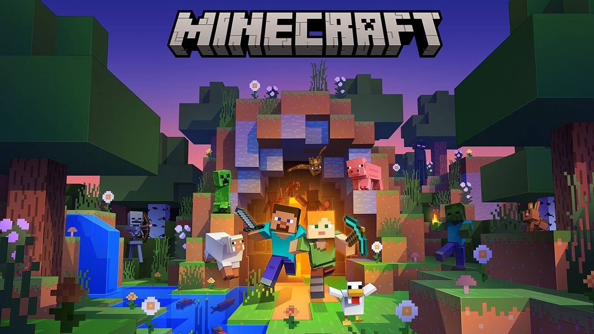
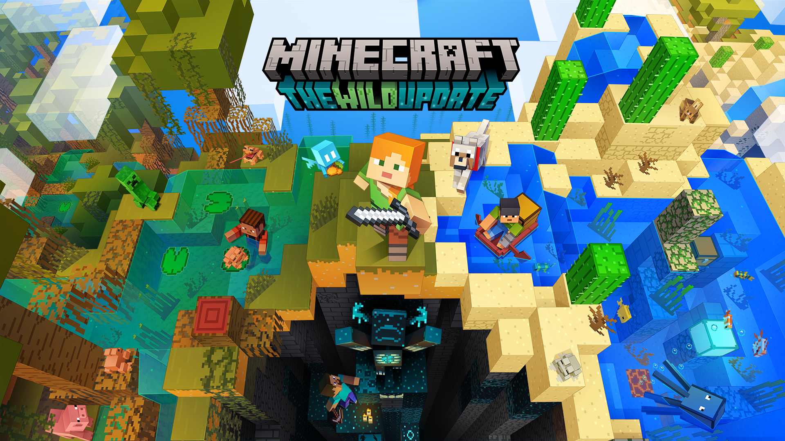
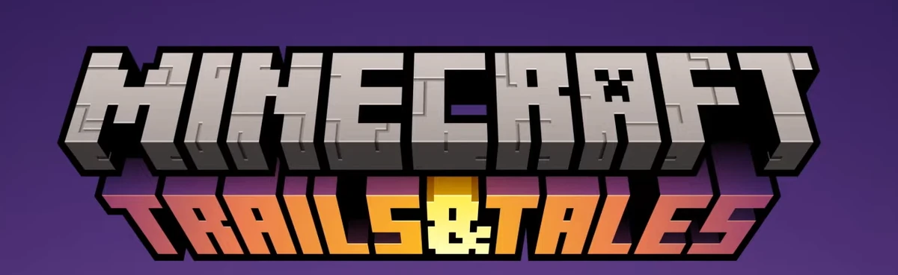

manicraft
#minecraft#

Про Майкрафт
- єта Minecraft (від англ. mine craft — досл. «шахтарське ремесло») — відеогра від незалежної студії Mojang 2011 року жанру «пісочниця» у відкритому світі з виглядом від першої/третьої особи. Гра започаткувала однойменну серію, для всіх творів якої характерний мінімалістичний кубічний дизайн.
Ця гра передусім дає змогу виразити свою креативність. Розроблена шведським програмістом Маркусом Перссоном, відомим також як «Notch», і надалі випускається заснованою Маркусом Перссоном компанією Mojang, котра належить Microsoft Studios. Minecraft належить до ігор з найширшою аудиторією і визнана найпродаванішою відеогрою в історії.
 Главные изменения будут связаны с Незером. Там появятся биомы, новые постройки, мобы и т.д. Вот о чём известно на текущий момент:
Новые биомы
Cтарый биом Незера теперь называется Бесплодный Незер (Nether Wastes).
Багровый лес
Багровый нилий покрывает пещеры вместе со всеми видами новых странных растений.
Огромные багровый грибы изображают «деревья» в этих леса, а грибосветы освещают их.
Хоглины любят эти леса.
Багровые споры кружатся в воздухе.
Искаженный лес
Искаженные леса нилиум покрывается пещеры вместе с со всеми видами новых странных растений.
Огромные искаженные грибы изображают «деревья» в этих леса, а грибосветы освещают их.
Тёмный синий туман окутывает лес.
Искаженные споры кружатся в воздухе.
Искаженные леса — это странно, но и наименее враждебное место в Незере.
Долина песка душ
Открытое пространство сделанное, в основном, из песка душ и почвы душ.
Базальтовые колонны тянутся от пола к потолку.
В воздухе витает прах.
Синее свечение пронизывает долину.
Опасайтесь скелетов!
Новые мобы
Пиглин
Помните в игре были свинозомби? Теперь их нет. Есть пиглины и зомбифицированные пиглины (бывшие свинозомби).
Пиглины — это представители агрессивной цивилизации, которая обосновалась в Незере.
Они обычно гуляют в багровых лесах, но вы можете их встретить в пустошах Незера.
Они думают, что игроки — это хорошая мишень, и нападают, как только завидят.
Однако если вы принарядитесь как следует, то они будут сочтут вас важной персоной.
Пиглины очень подозрительны, и если они заметят как вы открываете сундук или добываете золото, то решат, что вы пытаетесь что-то украсть. И поступят с вами соответственно.
Пиглины ЛЮБЯТ золото и всегда отвлекаются, завидев золотые предметы.
Золотые слитки — это валюта пиглинов. Золотой слиток можно бросить пиглину или предложить обменять на что-то, кликнув правой кнопкой по пиглину, держа в руке золотой слиток.
Когда пиглины голодны, они могут начать охоту на хоглинов. И иногда им везёт. А иногда — не очень.
Пиглины предпочитают охотиться или сражаться группами. И если начнётся драка, то все пиглины постараются принять в ней участие.
Пиглины боятся искаженного огня и зомбифицированны пгилнов и не будут к ним лезть ни при каких условиях.
Визер-скелеты — это древние враги пиглинов, и пиглины всегда на них нападают.
Маленькие пиглинята не опасны, но они любят попроказить — будьте начеку.
… а ещё они любят играть с маленькими хоглинами.
Хоглин
Хоглины — это большие агрессивные звери, живущие в Багровых лесах Незера.
Они нападают на игрока, как только его увидят. Поэтому будьте осторожны — они могут легко столкнуть вас в пропасть.
Хоглины «выбрасывают» свинину и немного кожи, но… неохотно.
Вы можете кормить хоглинов багровыми грибами, но делайте это на свой страх и риск.
На хоглинов охотятся пиглины, но первые не сдаются без боя.
Маленькие холины делают вид, что они страшные, но их не стоит бояться — они больше похожи на маленьких кусачих щенков.
Хотите, чтобы хоглины к вам не лезли? Крутой лайфхак: хоглины ненавидят запах искаженных грибов.
Зоглин
Зомбифицированный вариант хоглин. Хоглины зомбфицируются при переходе из Незера в обычный мир (это возможно благодаря порталу).
Агрессивные мобы нападают на всех, кроме криперов и других зоглинов.
Лавомерка
Единственный приручаемый моб, обитающий в Незере. Уникален тем, что может буквально ходить по лаве. Игроки могут оседлать его и путешествовать на нём по лаве. Для указания направления нужна удочка с искажённым грибком.
 -це версія під назвою печери і гори Part1- що добавили Пещеры и горы (Сaves & Cliffs) — так называться обновление, о чём было объявлено на Minecraft Live (Minecon 2020).
Соответственно, посвящено оно будет обновлению подземного мира игры и… горам.
Это обновление будет выпущено в двух частях. Первая часть выйдет под номером версии 1.17, вторая часть (предположительно) — 1.18. Однако о нумерации версий пока официально не сообщалось и может быть вторая версия выйдет под каким-то другим номером.
-це версія під назвою печери і гори Part2-Обновление «Пещеры и скалы. Часть II» вызвало у игроков самые противоречивые чувства, среди которых превалирует что-то вроде «маловато будет!».
Разработчикам даже пришлось оправдываться в твиттере, поясняя, что это вторая часть обновления, и его нужно рассматривать целиком. А чтобы уж совсем поставить точки над «ё», они опубликовали статью, где наглядно (в картинках) объяснили, о чём было это обновление
 На ютуб-канале Minecraft вышло любопытное видео, в котором разработчики Minecraft ответили на ряд вопросов игроков, посвященных предстоящему обновлению Minecraft 1.19 «Дикое обновление».
На вопросы отвечали: продюсер Minecraft Анна Ландгрен, геймплей-разработчик Ни Во, геймплей-разработчик Александр Сандор, 3D-художник Чи Вонг, программист Оскар Акессон.
Представляю вашему вниманию перевод вопросов-ответов (вопросы выделены жирным).
 Майнкрафт 1.20 станет следующим крупным обновлением игры, которое выйдет в 2023 году. Mojang пока не объявили официальное название обновления, но уже есть довольно много данных о будущем обновлении. Внутри этой новости вы найдете актуальную информацию о обновлении майнкрафта до версии 1.20, ближе к выходу релиза новость будет кардинально изменена, а пока вы можете увидеть доступную информацию.
На данный момент разработчики указали главную тему апдейта как — "самовыражение, креативность и внутренняя мотивация". Это дает слабые намеки, ведь каждое крупное обновление содержит декоративные и функциональные блоки, новых мобов и разную полезную мелочовку. Потому, пока мы активно следим за новостями и предварительными версиями игры.